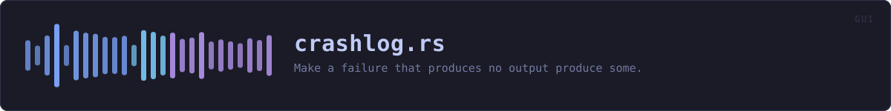

crates/veilvoice-gui/src/crashlog.rs
veilvoice-gui · 266 lines · read the source
Make a failure that produces no output produce some.
The problem this exists for
veilvoice-gui is built with windows_subsystem = "windows", so it has no console, and the workspace builds with panic = "abort", so a panic does not unwind into anything that could report it. Put together, every way this application can fail on Windows produces exactly nothing: no message, no dialog, no log. The window appears or it does not.
That is not hypothetical. A release shipped and the report was "it flashes a command prompt, loads in an unusable state, and crashes" -- which is all a user can report, because the program tells them nothing. The console flash turned out to be subprocesses (see no_window in crate::reduced_motion), and the crash could not be diagnosed at all from what was observable.
What this does about it
Two failures are caught and written to a file beside the preferences:
- A panic, through a hook. The hook runs before
aborteven underpanic = "abort", so there is a window in which to write. - A startup failure from
eframe, which is a returnedErrrather than a panic and is otherwise printed to a stderr nobody can see.
The second is the one worth expecting. This application renders through glow, which is OpenGL, and creating a GL context depends on the graphics driver. In a virtual machine, over a remote desktop session, or on a laptop whose hybrid graphics hand the process the wrong adapter, that call fails -- and the honest answer to "why did nothing happen?" needs to survive the process exiting.
What it deliberately does not do
It does not report anything anywhere. The file is written next to the preferences, on the user's own disk, and stays there until they delete it or the application clears it. A privacy tool that phones home about its own crashes would be exactly the thing this project spends its documentation refusing to be, and there is no network code in the dependency graph to do it with even if that changed.
It records no user content. A panic message, a source location, the version and a timestamp. Not the file being processed, not a path the user chose, not a passphrase -- nothing that is theirs.
In plain words
Makes sure that if VeilVoice falls over, it leaves something behind saying so.
A windowed program on Windows has nowhere to print to. Without this, a failure at startup produces a window that never appears and no message anywhere, and the only thing anybody can report is "it crashed", which is exactly the report that arrived once.
So the reason is written to a file, and the file is shown to you next time the application opens. It stays on your machine and is never sent anywhere.
WHAT THIS FILE CONTAINS
266 lines defining 7 functions (6 public), 0 types and 0 constants. Everything below is read out of the source, so it cannot disagree with the code.
What happens when it runs. These are the ways in: public, and nothing else in this file calls them, so they are what an outside caller reaches first.
installline 136 — Install the panic hook.
reachesdefault_path,previous,write,stamprecord_startup_failureline 159 — Record a startup failure that eframe returned rather than panicked.
reachesdefault_path,write,stampclearline 173 — Forget a previous report.
reachesdefault_path
WHAT CALLS WHAT
The functions this file defines, and the calls between them. An edge means the callee's name appears, called, inside the caller's body — a syntactic reading, not a type-resolved one.
The same graph as Mermaid source
%%{init: {"theme":"base","themeVariables":{"background":"#1a1b26","primaryColor":"#1f2335","primaryTextColor":"#c0caf5","primaryBorderColor":"#7aa2f7","secondaryColor":"#16161e","tertiaryColor":"#16161e","lineColor":"#737aa2","textColor":"#c0caf5","mainBkg":"#1f2335","nodeBorder":"#7aa2f7","clusterBkg":"#16161e","clusterBorder":"#2f3549","fontFamily":"ui-monospace, SFMono-Regular, Consolas, monospace","fontSize":"14px"}}}%%
flowchart TD
n_default_path["default_path<br/>line 64"]
n_stamp["stamp<br/>line 74"]
n_write["write<br/>line 87"]
n_install(["install<br/>line 136"])
n_record_startup_failure(["record_startup_failure<br/>line 159"])
n_previous["previous<br/>line 166"]
n_clear(["clear<br/>line 173"])
n_clear --> n_default_path
n_install --> n_default_path
n_install --> n_previous
n_install --> n_write
n_previous --> n_default_path
n_record_startup_failure --> n_default_path
n_record_startup_failure --> n_write
n_write --> n_stamp
click n_default_path href "https://github.com/tilas01/veilvoice/blob/main/crates/veilvoice-gui/src/crashlog.rs#L64" "open the source"
click n_stamp href "https://github.com/tilas01/veilvoice/blob/main/crates/veilvoice-gui/src/crashlog.rs#L74" "open the source"
click n_write href "https://github.com/tilas01/veilvoice/blob/main/crates/veilvoice-gui/src/crashlog.rs#L87" "open the source"
click n_install href "https://github.com/tilas01/veilvoice/blob/main/crates/veilvoice-gui/src/crashlog.rs#L136" "open the source"
click n_record_startup_failure href "https://github.com/tilas01/veilvoice/blob/main/crates/veilvoice-gui/src/crashlog.rs#L159" "open the source"
click n_previous href "https://github.com/tilas01/veilvoice/blob/main/crates/veilvoice-gui/src/crashlog.rs#L166" "open the source"
click n_clear href "https://github.com/tilas01/veilvoice/blob/main/crates/veilvoice-gui/src/crashlog.rs#L173" "open the source"
classDef entry fill:#1f2335,stroke:#7aa2f7,color:#c0caf5
class n_install,n_record_startup_failure,n_clear entry
classDef api fill:#1f2335,stroke:#7dcfff,color:#c0caf5
class n_default_path,n_write,n_previous api
classDef helper fill:#1f2335,stroke:#bb9af7,color:#c0caf5
class n_stamp helperThis site loads no third-party script, so it cannot run Mermaid; the diagram above is the same nodes and edges drawn by the generator instead. GitHub renders the source below directly.
ITEMS
| Item | Line | Documentation |
|---|---|---|
default_path pub fn | 64 | The file a failure is written to, beside the preferences. |
stamp fn | 74 | Seconds since the Unix epoch, or 0 if the clock is unreadable. |
write pub fn | 87 | Write one failure report. |
install pub fn | 136 | Install the panic hook. |
record_startup_failure pub fn | 159 | Record a startup failure that eframe returned rather than panicked. |
previous pub fn | 166 | Read a previous report, if one is there, so the interface can mention it. |
clear pub fn | 173 | Forget a previous report. |